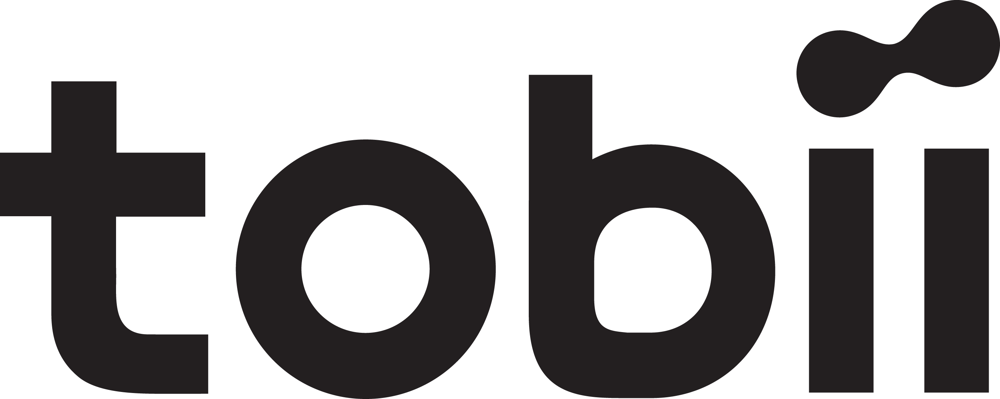

Rankings Tech hardware & optics Tobii

Tobii
A view of the same findings, not a new score. How it works
The model found several serious problems. That does not mean the stock will fall.
Biggest deductions
- Financing and debt (going concern)−17
- Margin−8
- Quality of growth−7
Strengths
- Cost discipline+2
- Future segment+1
Speculative profile
A penny stock under DKK 3. The asymmetry rating is separate from the Vanta score and is not a recommendation.
- Asymmetry (1–10)
- 3
- Price
- 0.73 DKK
- Market value
- DKK 166m
- Cash runway
- 11 months
- Cash / debt
- 37.0 / 547.0m SEK
- Dilution, 12 months
- +0%
Bull case
Autosense is sold or gets a strong partner at a price that covers a large part of the net debt of about SEK 510m, and the core business (82% gross margin, about SEK 500–550m revenue) becomes cash-positive after the savings. With EV/sales of 1–1.5 and low debt, equity could be SEK 0.6–0.9bn, i.e. 2–3x today; 5x+ requires a sale at a clear overprice.
Bear case
No buyer at a good price, the cash runs out, and a rescue issue or debt conversion happens far below SEK 1 (e.g. a rights issue of SEK 300–500m at SEK 0.3–0.5). If the lenders break with the company, shareholders could lose almost everything.
Catalysts
- 22 Oct 2026Q3 2026 report: liquidity, status of strategic review and any financingbinary stockanalysis.com
- Q4 2026Outcome of strategic review: divestment/partnership in Autosense or capital raisebinary quartr.com
- 2027Target of sustained positive operating cash flow from 2027, carried by Autosensegradual quartr.com
How the score is built
From 100 to 43, step by step: points off for the business, the price and the cracks, back for documented strengths, then three data adjustments.
Hover or select a step to see what drove it. Steps with findings open them below.
Key numbers
As of 9 Oct 2026. Analyst targets tend to be optimistic; read upside as a hint, not a forecast.
- Price
- 1.16 SEK
- Median analyst target
- –
- Upside to median
- –
- Analysts
- none
- Target range
- –
- 52-week change
- −67%
- P/E (trailing)
- n/a
- Forward P/E
- n/a
- PEG
- n/a
Findings
Every deduction and every plus, with its source. Open a step to read them.
Business
Is the company getting stronger, not just bigger? · 4 findings−24 of −30
- −8MarginUnderlying operating loss: Q2 2026 EBIT of SEK 15m contains approx. SEK 51m non-cash reversal of contingent consideration, so the real EBIT is approx. −36m. Net income SEK −306m TTM after writedowns (Q4 2025: −201m). Gross margin is high (82%), but the company has had positive operating profit in only one of the last five years.
- −7Quality of growthRevenue fell 46% in Q2 2026 to SEK 154m and 31% TTM to 670m. Integrations fell from 178 to 37m SEK (one-off licence the year before), Products & Solutions from 93 to 76m. Only Autosense grows (40m vs 12, driven by a licence agreement). Adjusted organic growth was 7%.
- −6Capital allocationThe acquisitions in Autosense were financed with loans and contingent consideration: total debt rose from SEK 79m (2023) to 547m (Q2 2026), while cash fell from 236 to 37m. Large write-downs in Q4 2025 show that the purchases have not delivered the expected return.
- −3MoatTobii is the leader in eye tracking, but in in-cabin car sensors (DMS) the company competes with Seeing Machines and Smart Eye, and Integrations depends on a few PC/XR manufacturers. The company is now expanding into component licences in Autosense, which pressures the price per car.
Price
Today's multiples against the company's own history and its peers. · 1 finding−5 of −35
- −5Multiples vs own historyP/S 0.40 is low vs 0.55–2.9 in 2023–2025, but debt gives EV/sales 1.16 and EV/EBITDA 20.4 on an EBITDA that is almost zero. With a negative result and the company's own FCF of SEK 35m TTM, the stock is only cheap if the debt can be refinanced without major dilution.
Cracks
Cash flow, customers, debt, insiders, guidance and what sits behind the headline numbers. · 3 findings−25 of −35
- −17Financing and debt (going concern)Cash was SEK 37m at 30/6-2026 plus a credit facility of 25m (14m drawn) vs net debt of 510m. Management itself writes that there is a risk of insufficient financing over the next 12 months, and the board is examining divestments, partnerships and capital raising. An issue at SEK 1.1 would dilute heavily.
- −5Demand and customersWeak demand in China and the lapse of one-off licences in Integrations; no guidance for H2 2026. Management expects only a 'gradual normalisation' in China.
- −3Autosense executionAutosense must carry the target of positive operating cash flow from 2027, but the business requires further savings (about SEK 50m annually) and is seeking partners; automotive programmes have long delays, and a forced sale process could give a low price.
Plus
Only documented strengths. · 2 findings+3 of +15
- +2Cost disciplineThe savings programme from Q3 2025 has delivered SEK 163m over four quarters (43m in Q2) vs a target of 100m.
- +1Future segmentAutosense revenue more than tripled (SEK 40m vs 12 in Q2) after a new licence agreement; the EU requirement for driver monitoring in new cars drives demand.
Caveats
What the score does not capture, or where the data is weak.
Also in Tech hardware & optics
The highest scores in the same industry.